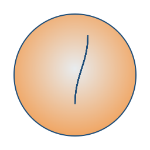

A soft circular badge in pale gray-blue (#E8ECEF) sits centered as the base, giving the mark a stable, coin-like foundation; behind the main figures, a simplified rising sun with three clean rays fans upward in warm orange (#F2994A) from the lower portion of the circle, symbolizing hope after crisis; in front of the sun, a simplified roofline made of two bold triangular strokes in deep blue (#1F4E79) forms a small house shape, representing shelter and home; cradling the house from below, a single open hand rendered in the same deep blue as a smooth, minimal silhouette curves upward and outward, its fingers gently spread to suggest care, support, and rescue; a thin white outline separates the hand and house from the sun and background circle to keep the composition crisp and legible at small sizes; the overall silhouette is symmetric and centered, designed to read clearly as an icon even without accompanying text.

Center a soft rounded circle badge in pale sky blue as the background shape, giving the logo a friendly coin-like frame. Behind the top of the circle, place a simple bright yellow sun with a few short rounded rays peeking over the rim to suggest a cheerful outdoor pool day. Across the lower half of the circle, layer two overlapping wave bands in teal and deeper blue, drawn as smooth rounded curves like gentle ripples of a pool. Swimming just above the waves, place a small chubby cartoon fish in coral red with a round white belly, a single dot eye, and a curved smile, tilted slightly as if mid-swim. Add a few small white bubble circles of varying size trailing behind the fish to reinforce motion through water. Finish with a slightly thicker white outline around the entire circular badge to give it a clean, sticker-like finish suitable for a kids' brand.


Center a rounded amber bottle silhouette with a narrow neck and gentle shoulders, filled solid with deep forest green to root the mark in craft brewing tradition; inside the bottle, layer a concentric swirl pattern made of soft organic rings in olive-green and mustard-orange, mimicking a SCOBY culture floating in liquid; scatter three to five small circular bubbles of pale cream rising from the base toward the neck to suggest carbonation and fermentation; wrap a thin curved line across the widest part of the bottle like a label band, left unlettered but subtly textured with tiny dashes to imply craft paper; finish with a small sprig of two leaves sprouting from the bottle cap area in muted sage green, symbolizing natural, botanical ingredients; keep all shapes rounded and hand-drawn in feel, with slightly uneven, organic edges rather than perfect geometry to reinforce the artisanal, small-batch character.